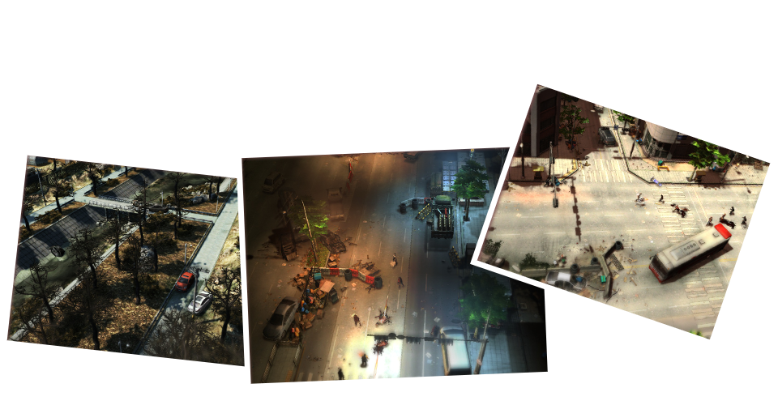
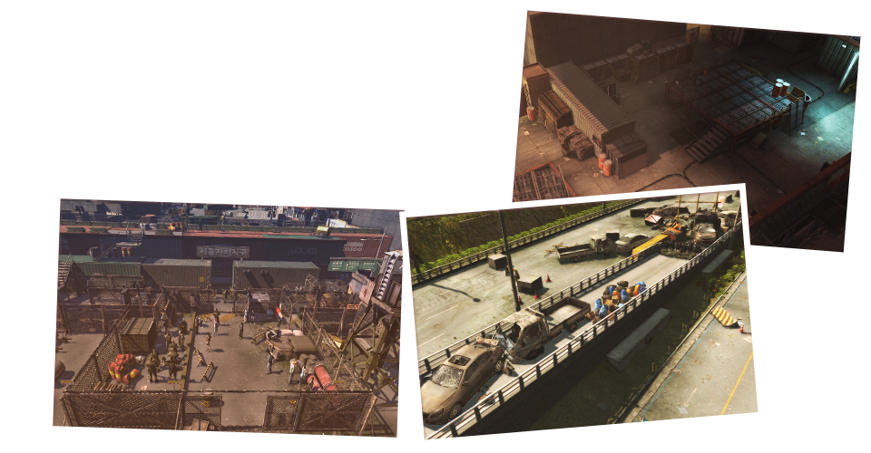
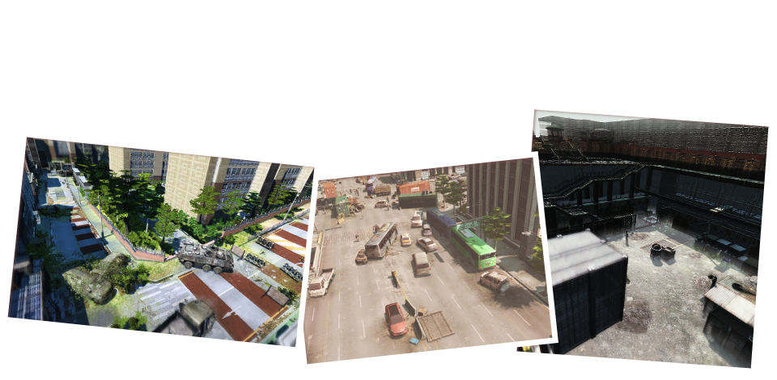
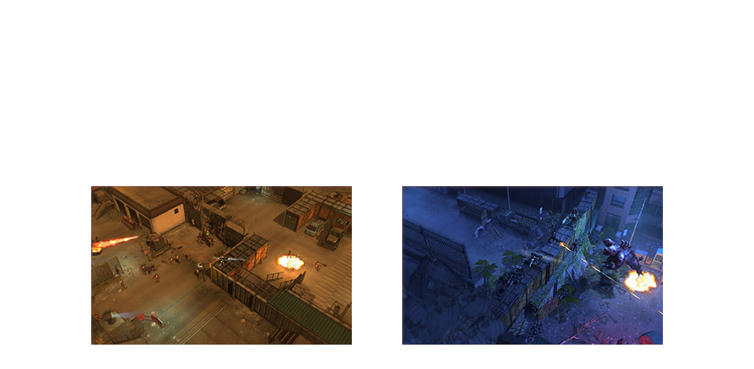
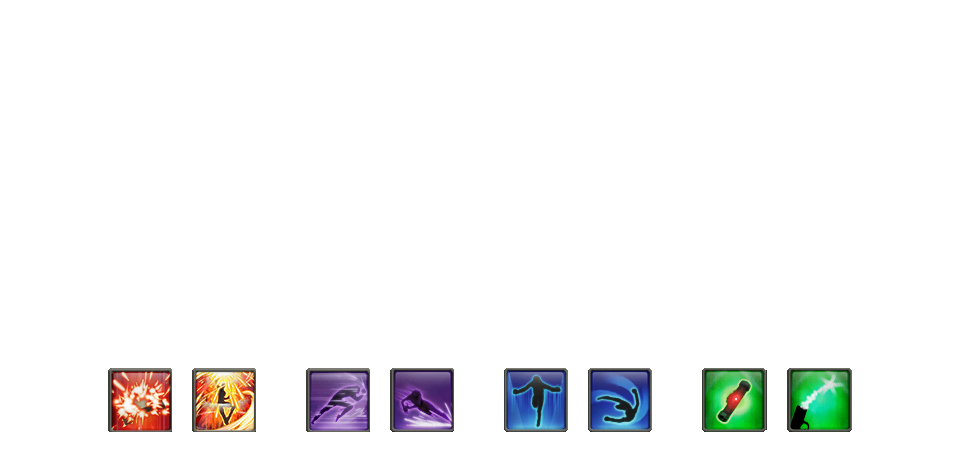

-

이터널시티3는 이터널시티 시리즈의 세번째 타이틀로 전작의 세계관을 계승한 아포칼립스 액션 MMORPG입니다.
다양한 온라인 게임 플레이 경험을 가진 성인 남성을 주요 타깃으로 다양한 스킬과 직업 시스템 등을 통하여
높은 자유도를 느낄 수 있으며, 한층 강화된 액션과 독보적인 슈팅적 요소는 타 게임과는 차별화된 강렬한 전투를 제공합니다.
전작들에서 인기를 얻었던 다양한 퀘스트와 미션시스템 등을 강화하여 적용하고 다양한 신규 컨텐츠를 추가하여
유저가 보다 재미있게 게임에 몰입할 수 있는 환경을 제공합니다. -
2002년.
누구도 상상하지 못했던 변이 바이러스의 발생으로 인류는 혼란과 절망에 빠졌다.
문명을 지키려는 인류와 모든 것을 잠식하려는 변이 바이러스와의 10년간의 전쟁은
결국 EL.A가 최후의 승자가되는 것으로 종결 짓게 된다.
하지만 전쟁이 끝난 뒤 그들에게 남은 것은 폐허가 된 도시와 남겨진 자들의 분노뿐이었고,
이를 계기로 지역 및 인종, 종교적 이념을 근간으로 결속되었던 국가라는 공동체는
지극히 단순한 생존이라는 문제 앞에 붕괴되고 배타적인 무장 단체들이 주권을 획득하게 된다.
이에 EL.A는 인류가 다시금 번영을 되찾을 발판을 마련함과 동시에
단일 문명을 이룩할 계획을 세우고, 보유하고 있는 절대적인 무력을 앞세워 연방제를 선포,
2014년 대한민국의 수도 서울에 EL.A 산하 서울자치지구가 탄생하게 되는데... -
현실감 있고 퀄리티 높은 그래픽을 구현하였습니다.
도시 구현에 최적화된 불도저3 엔진을 통해 실제 강남 지역의 지형 지물들을 사실적으로 구현하여 몰입감 을 극대화 하였습니다.
또한, 실시간으로 흐르는 시간 변화에 따라 오전, 오후 낮, 황혼, 밤, 새벽 등의 시간적 연출 과 맑음, 흐림, 먹구름 등의 광도 연출,
기온에 따른 온도 연출, 습도에 따른 안개, 눈, 비 등의 환경 연출 등이 조합되어 경험해본 적 없는 수많은 환경을 만들어 내며,
연기나, 불, 폭발 등 다양한 배경 이펙트 를 통해 보다 다양하고 사실적인 비주얼 을 창조하였습니다.
또한, 다른 쿼터 뷰 기반의 게임에서는 흔히 볼 수 없는 자유로운 카메라 시점(360도 회전 가능) 및 줌 인/아웃 기능을
구현하여 한층 강화된 현실감과 자유도 높은 화면 시점을 구현하였습니다. -
이터널시티 3 만의 액션성 을 강조하였습니다.
이터널시티 3는 기본적인 총기류의 원거리 공격 외에도 근접 공격, 대규모 폭발형 화력지원 스킬 등, 다양한 형태의 전투방식을 구현하여 특유의 액션성을 강조하였습니다.
게임 내 캐릭터는 대부분의 장애물을 기어오르거나 뛰어넘고 올라설 수 있으며, 이러한 장애물들을 적의 원거리 공격으로 부터 엄폐 하는데 활용할 수 있습니다.
또한, 조명이 꺼진 실내나 밤 시간을 통해 캐릭터를 어둠 속으로 은폐 하는 등의 전략적인 플레이 가 가능합니다.
위의 기능은 플레이어 캐릭터뿐만 아니라 ‘좀비’, ‘변이 생명체’ 등의 몬스터들 역시 마찬가지로서, 영화 ‘월드워Z’ 에서 등장했던 장면과 같이 무수한 수의 좀비들이
장애물을 뛰어 넘으며 메뚜기 떼 처럼 달려드는 좀비 아포칼립스적인 상황을 게임 내에서도 경험할 수 있습니다.
이 뿐만 아니라 무기별로 약 200여 가지의 각기 다른 무기 효과음 을 통해 리얼한 사운드를 구현하였고, 실외 및 실내, 숲 속이나 지하 등, 환경에 따라
변화하는 환경소음 과 상황에 따라 연출된 백 여 종에 달하는 배경음악 으로 풍부한 음향환경을 구성해 현실감을 더했습니다. -
시나리오 퀘스트
세계관과 시나리오에 따라 서울 자치지구에서 벌어지는 이야기들을 플레이어가 직접 개입하여 해결하는 컨텐츠이며,
초토화 된 세상을 살아가는 인류와 각자의 목적에 따라 생존투쟁을 벌이는 세력들의 이야기를 다루고 있습니다.
각 퀘스트를 하나 완료 할 때마다 소정의 보상을 지급 받습니다.
강습작전
별다른 인원요구 없이 플레이어 개인의 의사에 따라 진행 할 수 있는 컨텐츠로써, 테마 별로 기획된 8 ~ 7개의 소규모 지역을 탐험하면서
일반 필드에서 보지못했던 다양한 필드를 경험할 수 있으며 부여되는 임무를 진행하게됩니다.
어설트
40 ~ 50명의 대규모 인원이 동시에 입장하여 진행 할 수 있는 컨텐츠로써, 최종 목표를 위해 다수의 인원이 자발적으로 협동해야 하는 형태의 임무들로 구성되었습니다.
해당 컨텐츠는 완료 시 살아남은 인원에게만 대량의 보상을 지급하며, 진행 도중 사망하거나 포기한 인원에게는 보상을 지급하지 않습니다.
분대작전
팀(파티) 인원(약 6명)이 모여 분대를 이룬 상태에서 신청, 입장 할 수 있는 컨텐츠로써 팀워크를 발휘해 단계별 미션을 진행하게 됩니다.
각 미션은 기획에 따라 전투 및 조사, 기물 파괴 등의 다양한 임무로 구성되며 완료 시 분대원 전체에게 보상을 지급합니다.
-
지역해방
지역의 여러 실내(건물)나 각 구역을 돌아다니며 다양한 임무 수행을 하는 단발 퀘스트형 컨텐츠입니다.
해당 지역의 메인 퀘스트를 모두 완료한 후 해당 지역의 건물 내부나 각 구역에 잔존하고 있는 모든 몬스터를
퇴치하여 해당 지역을 변이생명체들로부터 해방시킨다는 컨셉으로 플레이가 진행됩니다.
탐사임무
탐사임무는 해당 지역의 지역해방을 완료한 후에 진행 할 수 있는 컨텐츠 입니다. NPC와 대화하거나 아이템을 획득하는 방법으로
보상이 숨겨진 위치가 적힌 종이나 열쇠 등을 획득한 후 특정 지역으로 진입하여 몬스터 퇴치, 기물탐색 및 파괴 등의 탐사 임무를 완료 후 보상을 받을 수 있습니다.
자치군임무
일정 레벨만 달성하면 진행 할 수 있는 반복형 컨텐츠입니다.
임무 별로 설정 된 지역에서 몬스터를 일정 수량을 처치 혹은 수집하거나 제한 시간 안에 임무를 수행하는 형태이며
레벨 별로 임무가 있어 메인 퀘스트를 진행하여 부족한 경험치나 보상 등을 추가로 획득 할 수 있습니다.
습격전
습격전은 크게 자치지구 습격전, 전진기지 습격전으로 나뉘어 있습니다.
자치지구 습격전은 코엑스를 중심으로 코엑스 자치지구에 배치된 NPC나 기물 등을 보호하거나 몬스터의 공격으로부터 방어하는 형태이며,
전진기지 습격전은 자치지구 습격전 대비 다소 축소된 규모로 미션이 진행되는 컨텐츠 입니다. -
전직
용병, 군인, 스파이, 사냥꾼, 모험가 등 12종의 직업 중에 선택한 캐릭터에 따라 한 가지를
선택 할 수 있으며, 선택된 전직에 해당하는 능력치가 향상됩니다.
병과
고스트 정찰대, 뱅가드 돌격 보병단, 바이퍼 전투보병여단 등 총 8종의 병과 중 한가지를 선택 할 수 있으며,
선택한 병과에 따라 사용 가능한 총기가 늘어나게 됩니다.
특기
레벨 업을 통해 특기를 획득할 수 있으며, 특기의 종류는 전투, 재장전, 제어, 체력, 방어력, 회피, 회복력, 이동속도, 등이 있습니다. -
전투
전투기술은 수류탄, 특수무기, 설치무기, 지원사격, 반응성향상 등의 다양한 보조 장비, 캐릭터 능력의 일시적 향상과 같은
전투와 관련된 다양한 기능의 스킬들로 구성되어 있습니다.
또한 강력한 범위 공격 기술을 추가하여, 화려하고 시원한 액션성을 가미하였습니다.
근접
하이킥, 바디체크, 다운 공격 등, 원거리 공격뿐만이 아닌 근접 격투기술을 구현하여 단순히 사격과 회피기술을 반복하는 단조로운 플레이를 탈피하고,
급작스러운 몬스터의 습격 상황에서도 플레이어의 숙련도에 따라 빠르게 대응할 수 있는 박진감 넘치는 근접전투를 구현하였습니다.
회피
전작에서 구현 된 점프뿐만 아니라 구르기, 덤블링 등의 다이나믹한 형태의 회피기술이 추가되었으며
기술 사용 시 이동 경로를 화살표로 미리 표시해, 조작에 대한 편리함과 직관성을 제공합니다.
보조
제한적인 전투상황을 타개할 수 있는 기술들로써, 시야 확보를 위한 조명탄이나 주위 몬스터들을 유인하는 유인트랩, 일시적으로 적을 무력화하는 섬광탄 등
전투에 도움이 되거나 불필요한 전투를 회피할 수 있는 기술들을 구현하였습니다.

새소식+ 더보기
| [공지] 이터널시티3 CBT 참여 안내 | 2014-10-27 |
| [공지] 이터널시티3 CBT 참여 안내 | 2014-10-27 |
| [공지] 이터널시티3 CBT 참여 안내 | 2014-10-27 |
| [공지] 이터널시티3 CBT 참여 안내 | 2014-10-27 |
| [공지] 이터널시티3 CBT 참여 안내 | 2014-10-27 |